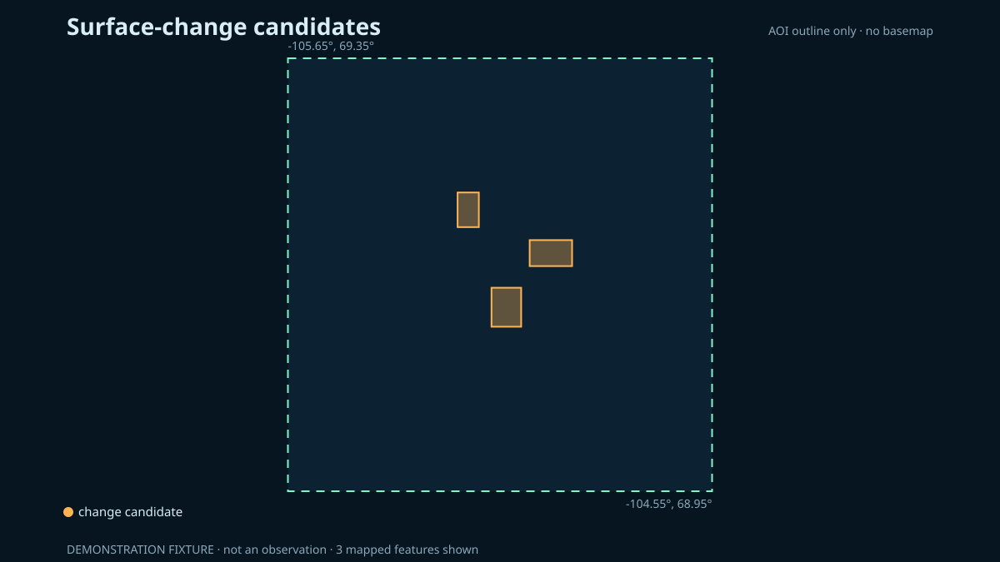

Layer A · Landsat 8
Surface-change candidates
Summer composite differences identify where reflectance changed between the configured periods. The method does not by itself determine what caused the change.
Candidates
—
Mapped candidate area
— km²
Periods
July–August 2014
July–August 2024
Static fallback

What this layer can support
It can direct a reviewer to persistent spectral differences that deserve inspection. It cannot confirm a building, road, port expansion or other cause without independent evidence.
Land and water mask
Water pixels from ESA WorldCover v200 are masked out before candidates are counted, so change over open water and most shoreline movement is excluded. A thin band along the coast can still produce differences, because the mask is 10 m and Landsat is 30 m. Candidates below the minimum mapping unit are dropped.
Bands used
Change magnitude is the Euclidean distance between two six-band surface-reflectance vectors from Landsat 8 OLI (Collection 2 Level 2, scaled to reflectance):
- Band 2, blue, 0.45–0.51 µm
- Band 3, green, 0.53–0.59 µm
- Band 4, red, 0.64–0.67 µm
- Band 5, near-infrared, 0.85–0.88 µm
- Band 6, shortwave infrared 1, 1.57–1.65 µm
- Band 7, shortwave infrared 2, 2.11–2.29 µm
Not used: the thermal bands (10 and 11) measure emitted temperature, a different quantity from reflectance, at a coarser native resolution. Band 8 is a single 15 m panchromatic band with no spectral information to compare. Bands 1 and 9 are coastal-aerosol and cirrus diagnostic bands. Pixels flagged for dilated cloud, cirrus, cloud, cloud shadow, snow or saturation are masked before the distance is computed.
Principal limitations
- Cloud, haze, snow remnants, shadow, shoreline movement and water level can create differences.
- A median composite can suppress short-lived conditions but cannot remove every seasonal mismatch.
- The threshold is a project parameter, not a universal Arctic construction detector.
- Landsat pixels mix multiple ground materials.
The public label is “surface-change candidate,” not “new infrastructure.”
Reproduce this
Run the live pipeline’s change part or open
notebooks/03_infrastructure_change.ipynb on GitHub. The exact
dates and threshold are in configs/cambridge-bay.json.